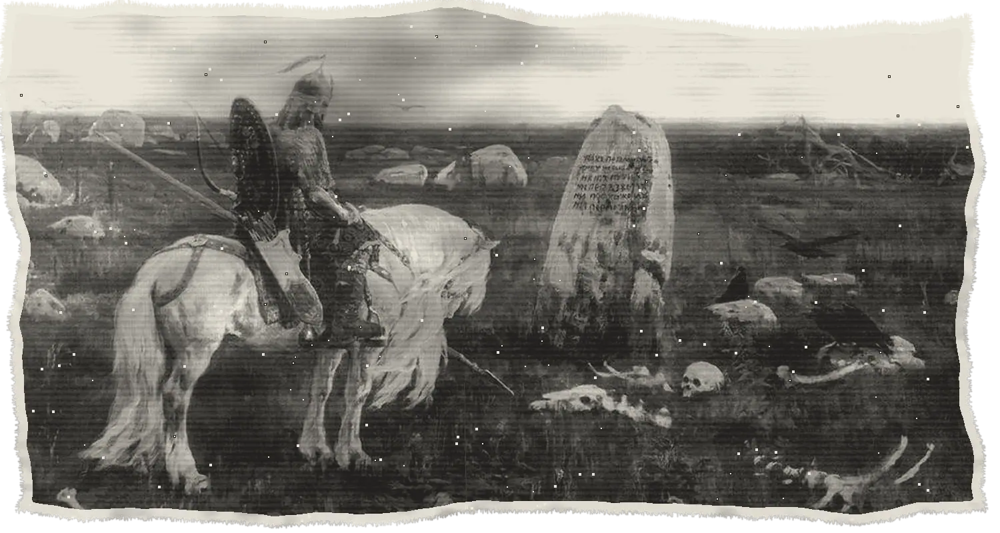

ТОМ II · ЛИСТ P · 04 / 06
ДОРОГИ И ПЕРЕКРЁСТКИ
Прощание на последней росстани, реконструированный обряд и кресты у современного шоссе
Перекрёсток — место, где кончается деревня, где провожают родных и где, по реконструкции одной исследовательницы, когда-то хоронили часть мёртвых. Современный полевой подсчёт придорожных памятников добавляет подсчитанный набор: 299 знаков на трёх трассах. Лист держит старую реконструкцию и новый подсчёт порознь.
Реконструируемый обычай; полевой подсчёт 2013–2021 · Русский Север (реконструкция); Чувашия, Татарстан и Мордовия (подсчёт) · Восточнославянский народный обычай; современное придорожное поминовение
P / 01
Прощание на последней росстани
Статья Н. А. Криничной 1997 года о росстани, перекрёстке, записывает, что это было обычное место проводить путников и ждать родных, вернувшихся после долгой отлучки. Обычай прощаться на краю деревни, на ближайшей росстани, по её словам, дожил до её времени. Материал у неё в основном с Русского Севера: Карелия, Заонежье, Вологда и Кострома.
Тема статьи — судьба, а прощание — побочный сюжет, разобранный кратко. Цифр о том, насколько обычай был распространён, она не даёт.

P / 02
Перекрёсток как место погребения
Криничная возводит погребение на перекрёстках к культу предков. Она ссылается на «Повесть временных лет»: радимичи, вятичи и северяне, сказано там, сжигали умерших, собирали кости в малый сосуд и ставили его на столпе «на путех», и по Лаврентьевскому списку вятичи так делали и тогда. В её прочтении это был обряд для родового предка, а столб, камень или крест на перекрёстке происходит от него. Летопись описывает сожжение и сосуд на столпе, а не погребение; шаг к позднему погребению — её. Она говорит, что обряд дошёл до поздних времён в выродившемся виде, когда на росстани стали хоронить умерших «неестественной смертью»: удавленников, утопленников, опойц и других самоубийц, а также мертворождённых, недоносков и некрещёных детей.
Это реконструкция. Она опирается на фрагментарные, часто XIX-вековые записи и на идею пережитков, а сама рамка автора делает многое в ней гипотетическим. Лист подаёт её как довод одной исследовательницы. Он не устанавливает, что какого-либо мёртвого хоронили на каком-либо перекрёстке.

P / 03
Обочина сегодня
Географическое исследование М. Г. Матлина — это сплошное обследование: он проехал участки трёх федеральных трасс Среднего Поволжья (всего 362 км), зафиксировал придорожные памятные знаки сплошным проездом, сфотографировал их, определил координаты части из них и частично опросил дорожных рабочих и жителей. Сколько людей опрошено, в статье не сказано. Объезды приходятся на период с июля 2013 по апрель 2021 года, с повторными проходами для наблюдения за изменениями; даты на 299 знаках идут с 1965 по 2019 год.
Он делит их на два семейства. Одно подражает кладбищу: кресты, стелы, обелиски, оградки, венки. Другое нет: горшки с цветами, беседки, украшенные деревья, детали автомобилей. Граница между ними нечёткая. Размещение различается по регионам: чаще всего знак стоит на откосе в Мордовии (47,9%), в придорожной полосе в Татарстане (30,8%) и в лесопосадке или лесу в Чувашии (около 62%). Он противопоставляет это европейской и североамериканской привычке ставить знаки как можно ближе к дороге: на этих трассах на самой обочине знаки встречаются крайне редко.
Два ограничения подсчёта указывает сам автор. Временные предметы (живые и искусственные цветы, венки, ленты, игрушки) отделены от постоянных (дерево, металл, камень), но срок жизни временных установить не удалось: десять из них продержались от одного до трёх лет. И в прочитанном тексте координаты даны лишь для части знаков и списка нет, поэтому лист их не картографирует. Вторая статья Матлина, прочитанная только в аннотации, сообщает, что знаки без сведений об умершем составляют 19% на Р 241, 33% на А 151 и 50% на Р 178.
P / 04
Знаки, сосчитанные на трёх трассах
| Трасса | Регион | Длина участка | Учтено знаков | Даты на знаках |
|---|---|---|---|---|
| А 151 | Чувашия | около 120 км | 132 | 1984–2018 |
| Р 241 | Татарстан | около 130 км | 95 | 1977–2019 |
| Р 178 | Мордовия | около 112 км | 72 | 1965–2018 |
| Итого | Три республики Среднего Поволжья | около 362 км | 299 | 1965–2019 |
Аппарат источники · связанные листы · термины
Источники этого листа
- krinichnaya1997 Криничная, Н. А. — На росстани: мифологема судьбы в фольклорно-этнографическом освещении (1997)
- matlin2021 Матлин, М. Г. — Смерть в ландшафте: пространственный аспект современной традиции отмечать места гибели людей на автодорогах (на примере российских федеральных трасс А 151, Р 178, Р 241) (2021)
- matlin2022 Matlin, M. G. — Personalization and Anonymization of the Place of Death of a Person in an Accident (Using the Example of Federal Highways A 151, P 178, P 241) — Russian title not captured (2022)
Ссылки, даты обращения и ограничения — в списке источников.